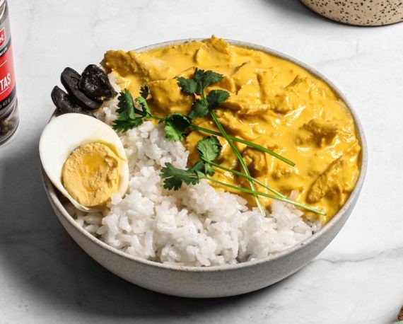
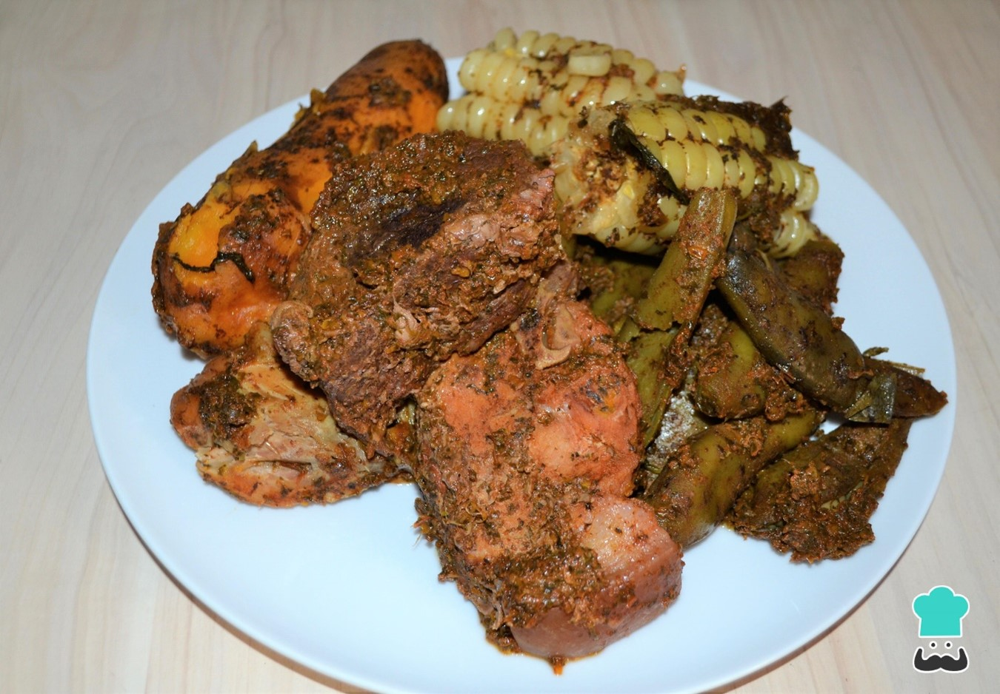
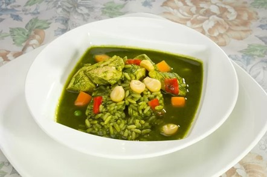

PREPARACIÓN
1. Poner el agua en una olla grande, hervir y luego agregar el sachet de Caldo en Polvo de Pollo Gourmet y revolver hasta que éste se disuelva. Agregar la pechuga de pollo entera y cocinar por 30 minutos o hasta que el pollo esté bien cocido.
2. Sacar el pollo del caldo y con las manos deshilachar. Reservar de forma separada el pollo y el caldo en que se cocinó.
3. Calentar el aceite en una olla grande y cocinar la cebolla junto al ají, condimentar con Sal de Mar Gourmet y Mix de Pimientas Gourmet. Cocinar hasta que la cebolla esté transparente y blanda.
4. Remojar el pan de molde en una taza del caldo de pollo que sobró de la cocción. Escurrir el pan y luego licuar junto a la leche evaporada, cebolla y ajíes. Volver todo a la olla y cocinar por 8 minutos. Agregar Cúrcuma Molida Gourmet, el pollo deshilachado, queso parmesano y nueces. Si estuviera muy espeso, agregar de a poco el caldo de pollo reservado.
5. Servir acompañado de arroz blanco, un huevo duro cortado en cuartos y aceitunas.
Recetas de Perú
Ají de Gallina

Pachamanca
PREPARACIÓN
Deshoja el chincho y el huacatay, lava y escurre. Licúa las hojas de chincho con el huacatay, el rocoto verde (opcional) sin pepas y sin venas con un chorrito de aceite vegetal. Reserva. Troza la carne que decidas usar. Yo opté por carne de chancho, pero podría ser carne de res, ternera, pollo o usar todas las que quieras al mismo tiempo. En un recipiente grande, sazona tu carne con tu licuado de huacatay y chincho, ají panca, ají mirasol, chicha de jora, sal, pimienta y comino. Deja macerar como mínimo 2 horas, de preferencia de un día para otro, refrigerado y tapado, así tomará un rico sabor.
Toma la olla que usarás y coloca al fondo corontas de choclo como base, la idea es que los alimentos que introducirás no toquen el fondo de la olla. Encima pon algunas pancas de choclo y acomodar primero la carne, luego los choclos, las papas, el camote y encima las habas bien lavadas con cáscara. El líquido de la carne macerada lo
Toma la olla que usarás y coloca al fondo corontas de choclo como base, la idea es que los alimentos que introducirás no toquen el fondo de la olla. Encima pon algunas pancas de choclo y acomodar primero la carne, luego los choclos, las papas, el camote y encima las habas bien lavadas con cáscara. El líquido de la carne macerada lo

Aguadito

PREPARACION
Salpimienta el pollo. Calienta el aceite en una olla a fuego medio y dora el pollo sin dejarlo cocer mucho. Transfiere a un plato y mantén caliente.
En la misma grasa sofríe la cebolla y el ajo hasta que se vea suave y ligeramente dorada la cebolla.
Mientras tanto procesa el ají con las hojas de culantro y ¼ taza de agua en la licuadora. Agrega junto con el caldo a la mezcla de cebollas y ajos. Revuelve bien.
Incorpora la cerveza, pollo, pimiento, zanahorias y choclo. Lleva a ebullición, baja el fuego al mínimo, y cocina con la tapa puesta unos 30 minutos.
Ojo: si estás usando pechuga de pollo no la agregues hasta este momento, o si ya la pusiste, retírala y mantenla caliente en un plato para que no se recocine.
Incorpora el arroz y las papas y cocina hasta que estén suaves. Si la sopa está demasiado espesa agrega más caldo.
Corrige la sazón y sirve de inmediato.